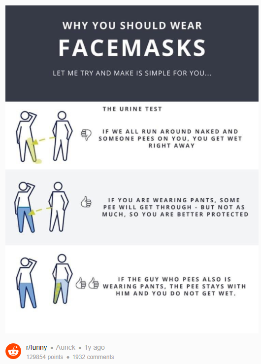
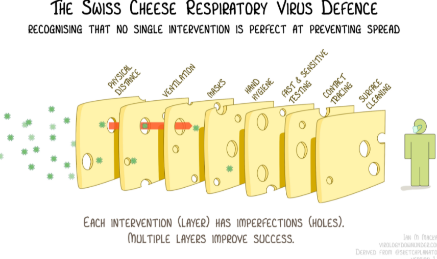

Bad Covid Analogies
Participate in the discussion here: RVF Thread
Looking for strong, concise, rhetorical rebuttals to the following reoccuring bad analogies (will rely on RVF's voting system to put the best retort in this consolidated resource):
- "We need to start looking at the choice to remain unvaccinated the same as we look at driving while intoxicated. You have the option to not get vaccinated if you want, but then you can't go out in public." - Leana Wen, CNN
- 
- In the U.S.: "But you are required to get immunizations to attend public school"
- 